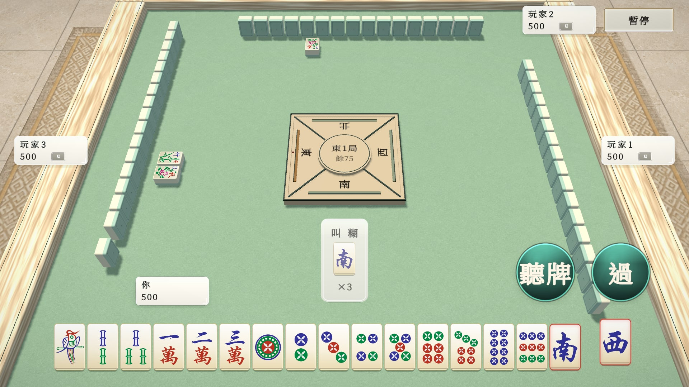
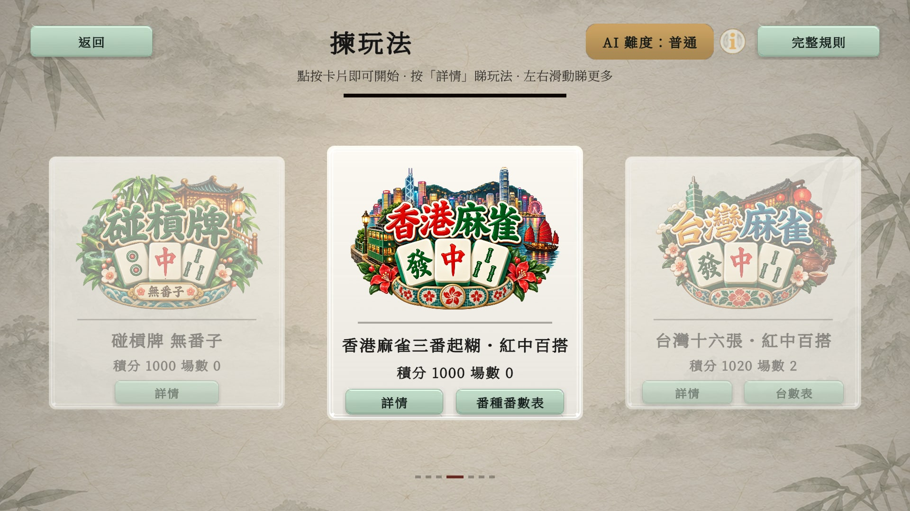
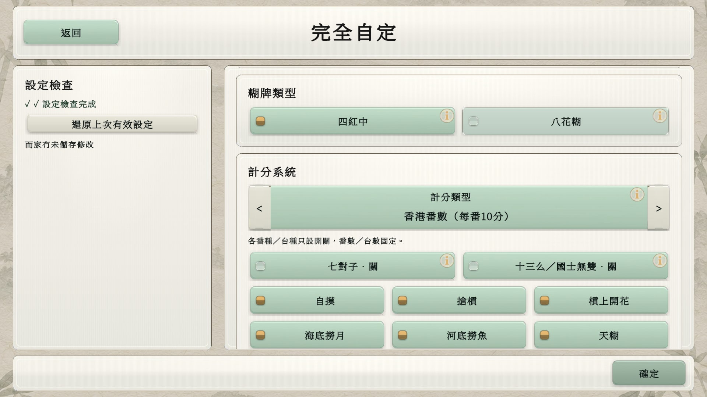
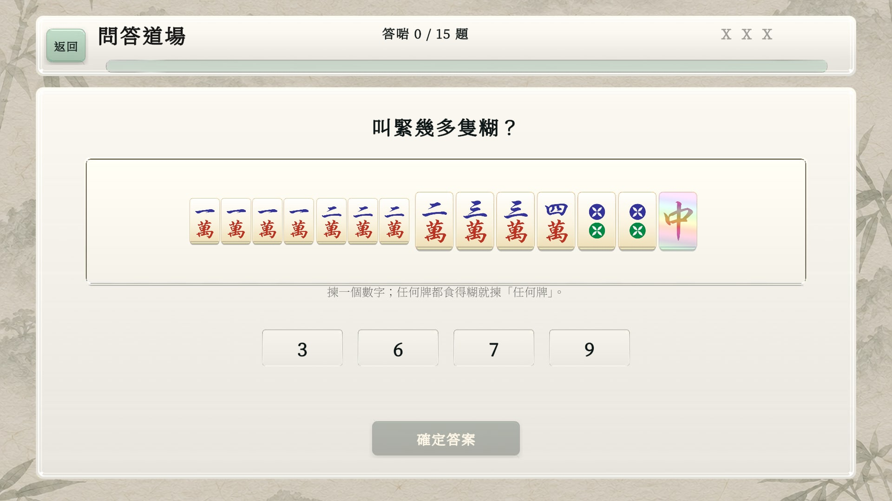
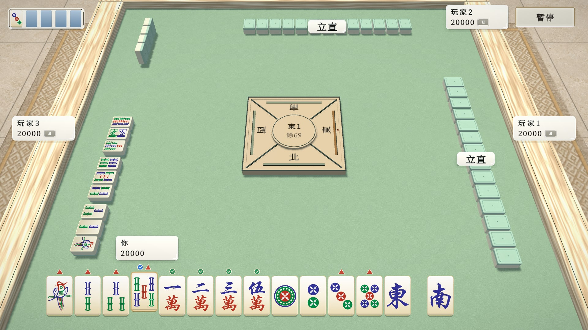
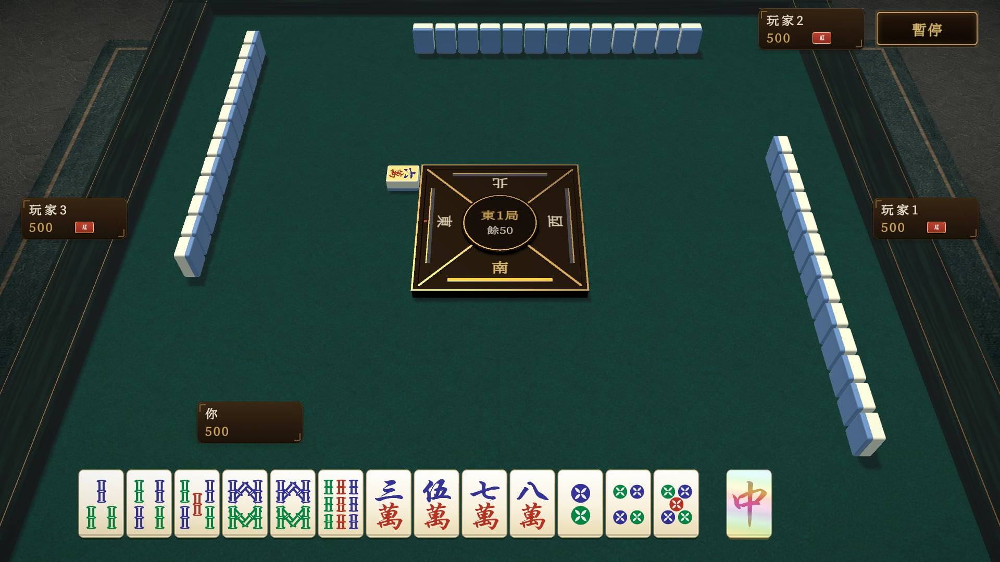
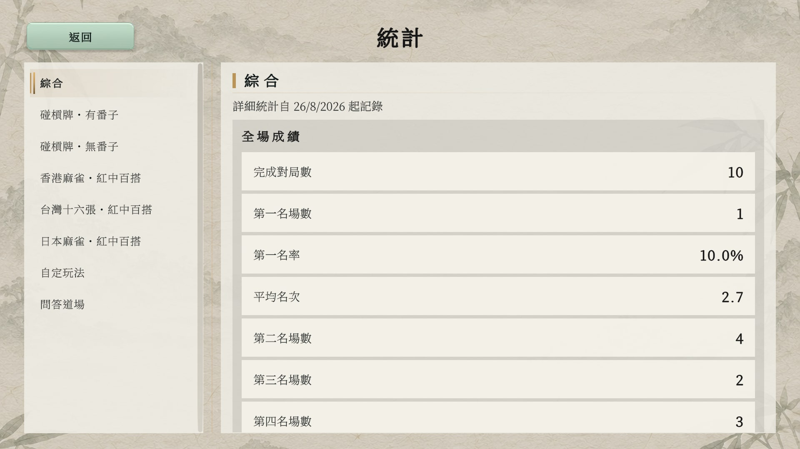
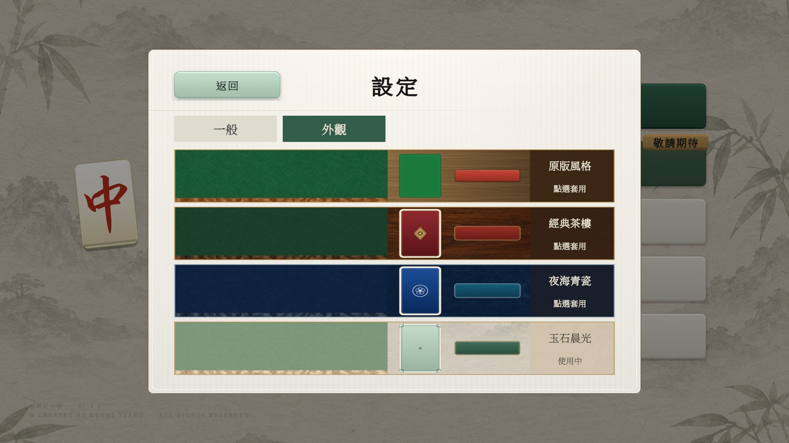

01
WILD CARD
紅中百搭有牌型限制。
香港玩法嘅紅中只可喺暗手嘅標準牌型、七對同十三么代牌，唔可以用來上、碰或槓。其他玩法按各自規則使用紅中。

01 WILD CARD
MAHJONG
紅中百搭按所選玩法嘅牌型限制使用
多種規則香港、台灣、日本玩法
自定玩法牌組、百搭、結算自由組合
核心玩法
碰槓牌、香港、台灣同日本各有自己嘅牌池、食糊條件同計分方式。 開局前可以睇玩法詳情；對局中亦可打開完整規則。
WILD CARD
香港玩法嘅紅中只可喺暗手嘅標準牌型、七對同十三么代牌，唔可以用來上、碰或槓。其他玩法按各自規則使用紅中。
碰槓牌 · 有番子 / 無番子
香港麻雀 · 紅中百搭
五種正式模式 + 自定玩法
由碰槓牌到香港、台灣同日本麻雀，揀熟悉嘅規則開局。五種正式單人玩法各自記錄排名分；自定玩法同問答道場不計排名。

01 · 碰槓牌
136 張：萬、索、筒，加四風同三元牌。紅中百搭，只可碰牌或槓牌，不可上牌；食糊以自摸為主。
起手 13 張 · 扎碼 · 槓錢02 · 碰槓牌
112 張：保留萬、索、筒同紅中，唔使用四風、發財及白板。紅中百搭，只碰槓、不上牌；食糊以自摸為主。
起手 13 張 · 較小牌池 · 保留紅中03 · 香港麻雀
144 張，包含八張花牌。三番起糊、十番封頂，每番 10 分；紅中可喺暗手嘅標準牌型、七對同十三么代牌。
起手 13 張 · 最近位截糊 · 即食即包04 · 台灣麻雀
五組一對，自由計台，底三十台十。配合紅中百搭、補花同報聽操作，按台灣玩法規則結算。
起手 16 張 · 底 30 分 + 每台 10 分05 · 日本麻雀
四人東風戰，20,000 點開始。採用遊戲嘅日本紅中混合規則，包含立直、振聽、番符同寶牌，另有「無百搭」追加役。
起手 13 張 · 立直 · 番符計分CUSTOM PLAYGROUND
由底版複製設定，或者建立完全自定玩法。調整人數、局制、牌組、食糊型態、百搭、上碰槓、碼牌同結算；番種／台種可獨立開關，個別番數／台數固定。
儲存鍾意嘅設定，下次直接開局。自定玩法獨立記錄統計，不計正式模式排名分。

線上連線 · 即將推出 私人房間功能敬請期待；目前可先體驗單人 AI 對戰。
練習與成長
想輕鬆打一局，定係認真練牌？按自己步伐揀難度，喺對局同問答之間慢慢累積經驗。
EASY / NORMAL / HARD
簡單、普通、困難，配合唔同程度。正式單人模式按難度及完場名次調整排名分，並各自記錄戰績。
QUIZ DOJO
每日由 15 道即時生成題目開始，練習叫糊牌、叫幾多隻糊，同揀最適合打出嘅牌。答錯會追加新題，最多可錯 3 次；完成後延續每日火焰，不計排名。

最新功能預覽 · 2026.10.05
由報聽操作到防守提示，幫你理解每一步。以下展示開發中版本，實際可用功能以 Google Play 已安裝版本為準。

放大畫面 ↗01 · 危險 / 安全牌提示
香港、台灣、日本玩法按公開資訊估算危險牌。日本另用綠色剔號標示對所有對手安全、藍色剔號標示對已立直對手安全；藍色唔代表對其餘對手都安全。
02 · 台灣報聽
先按聽牌，再揀未變暗嘅牌打出確認。正式報聽後，等待牌會持續顯示；張數按自己手牌同公開資訊更新，方便喺其他玩家回合繼續掌握局面。
顯示嘅係未見張數，並非牌牆實際剩牌。
四款外觀主題
原版風格、經典茶樓、夜海青瓷、玉石晨光。切換介面、牌桌、牌背同周圍環境，由暖木色到清雅淺色，揀你鍾意嘅牌局氣氛。

遊戲畫面
清晰手牌、立體牌桌，再配合台灣報聽同日本安全牌提示。以下為 Unity 遊戲畫面預覽；遊戲支援香港繁體、台灣繁體、簡體中文、英文同日文。

